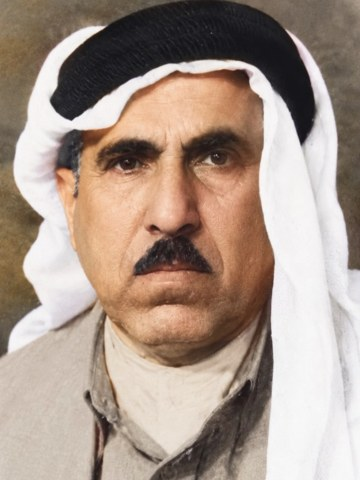

يوسف عيسى القطامي
١٩٠٨ إلى ١٩٨١
سيرة مختصرة
النوخذة يوسف بن عيسى القطامي، مواليد ١٩٠٨، ابن الملاح عيسى. قاد بوم سمحان الكبير الذي وصفه آلن فاليرز بأنه «جميلة كبيرة» في رحلات طويلة من البصرة إلى الهند وعدن وشرق أفريقيا، ومعه ملاحون شباب يتدربون على يديه، ويُعد أول كويتي يصل إلى بورسودان. ترك البحر في أواخر الأربعينيات، وكان له مكتب في سوق التجار، وتوفي سنة ١٩٨١.
المعلومات
- الميلاد
- ١٩٠٨، كما يذكر ابن أخيه صقر عبدالوهاب القطامي (معالم مدينة الكويت القديمة، الجزء السابع، ص ٤٣، نقلا عن القبس)
- الوفاة
- ١٩٨١، عن ٧٣ عاما (الحجي، نواخذة السفر الشراعي، ص ٥٢)، الكويت
- الوفاة
- ١٩٨١ (من سيرة ابنه يعقوب)
- البحر
- تعلم قيادة السفن والملاحة على يد أقاربه من عائلة الشاهين الغانم، وقاد بوم ابن رشدان أشهر خشب الكويت في رحلات سجلها القبطان آلن فاليرز في كتابه «أبناء السندباد». ووصفه صانع السفن علي عبدالرسول بأنه نوخذة جريء لا يهاب البحر. ويعد أول كويتي وصل إلى ميناء بور سودان على البحر الأحمر
- آخر حياته
- توقف عن السفر الشراعي في أواخر الأربعينات وتفرغ للتجارة الحرة، وكان له مكتب في سوق التجار يجلس فيه كل صباح ويستقبل فيه أصدقاءه من النواخذة والتجار والبحارة
- بوم بيان
- كان يملك بوم «بيان» حمولته ٣٠٠٠ من، من صنع الأستاد أحمد بن سلمان الأستاد (فؤاد إبراهيم بوعركي، السفر الشراعي والملاحة في كويت الماضي، صفحة ١٠٠)
- آلن فاليرز
- أبحر آلن فاليرز في طريق العودة عبر خليج عمان برفقة بومه الكبير «سمحان» الذي «يقوده النوخذة الكويتي المعروف يوسف بن عيسى». ووصفه بأنه «رجل ضخم صريح بشوش، طوله ستة أقدام وبنيته على قدر طوله، يضحك دائما بصوت عال من نكاته»، وكان يزورهم في ثوب أبيض طويل تحت مظلة يابانية، وكتب: «أحببت يوسف بن عيسى، وكان من دواعي سروري أن أزور بومه الكبير النظيف». وكان في مؤخرة سمحان غرفة صغيرة فيها كهرباء وراديو، وكان النظام على ظهرها ممتازا. وفي المنامة كانت أول سفينة رأوها، رافعة علم الكويت ترحيبا بهم (آلن فاليرز، أبناء السندباد، طبعة ٢٠٠٦، ص ٢٧١ إلى ٢٧٣ و٢٧٩ إلى ٢٨١ و٢٨٣ و٢٨٩ و٣٢٢ و٣٥٢)
- سمحان
- يكتب الحجي أن بوم سمحان، وحمولته نحو ٣٧٥ طنا، قاده يوسف وأخوه عبدالوهاب. بناه الحاج سلمان سنة ١٩١٧ لحمد الصقر، واشتراه محمد بن رشدان باثنين وأربعين ألف روبية، وأبحر إلى أغلب موانئ جنوب الجزيرة العربية وغرب الهند وشرق أفريقيا والبحر الأحمر، وبيع نحو ١٩٤٣ لتاجر فارسي من بندر كنك (يعقوب يوسف الحجي، The Art of Dhow-building in Kuwait، ص ١٢٤ و١٢٥)
- ملاح
- يكتب محررو كتاب «أبناء السندباد، الصور» أن يوسف القطامي قاد سمحان في رحلتين طويلتين عبر البحر سنتي ١٩٣٨ و١٩٣٩، من الهند إلى عدن ومن منجلور إلى ممباسا، وأن الملاحين اللذين كانا على ظهرها «كانا متدربين يتعلمان على يديه» (وليم فيسي ويعقوب الحجي وغريس بنديك، Sons of Sindbad: The Photographs، دار أرابيان ببليشنغ، ٢٠٠٦، ص ١٨ و١٩)
- المصدر
- كتاب نواخذة السفر الشراعي في الكويت، د. يعقوب يوسف الحجي، ٢٠٠٤، نشره حساب alghanim_history في ١٠ نوفمبر ٢٠٢٠
العائلة
- الأب
- عيسى عبدالوهاب القطامي
- الأم
- موزة شاهين الغانم
- الزوج
- مريم عبدالعزيز القطامي، حصة عبدالعزيز القطامي
- الأبناء
- فيصل يوسف القطامي، شيخة يوسف القطامي، أنور يوسف القطامي، شيخة يوسف القطامي، يعقوب يوسف القطامي